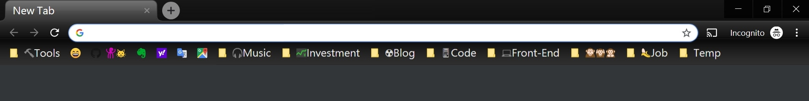
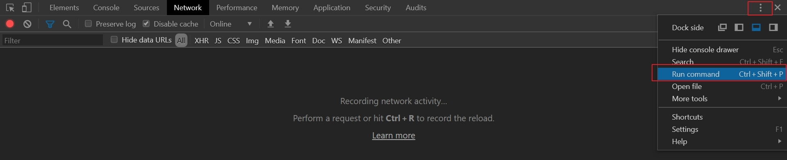
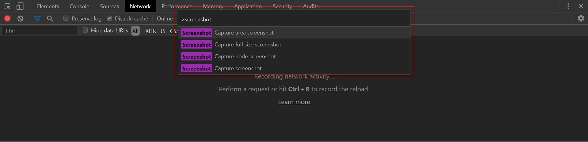
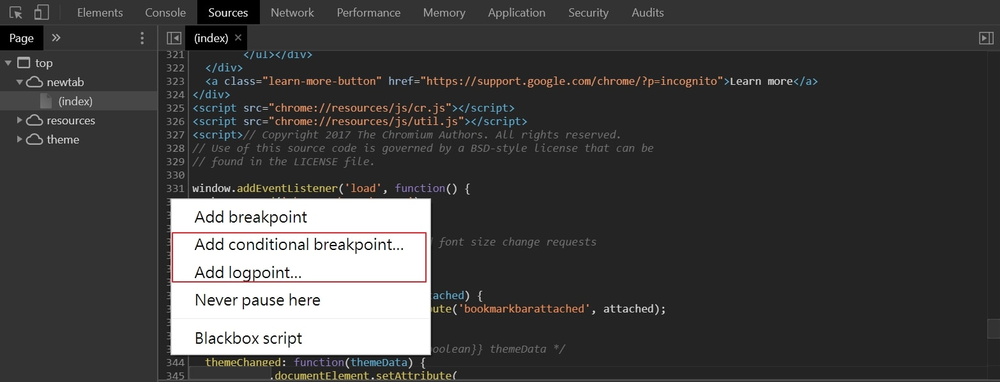
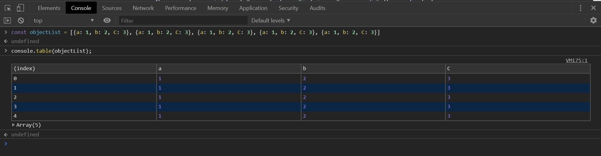
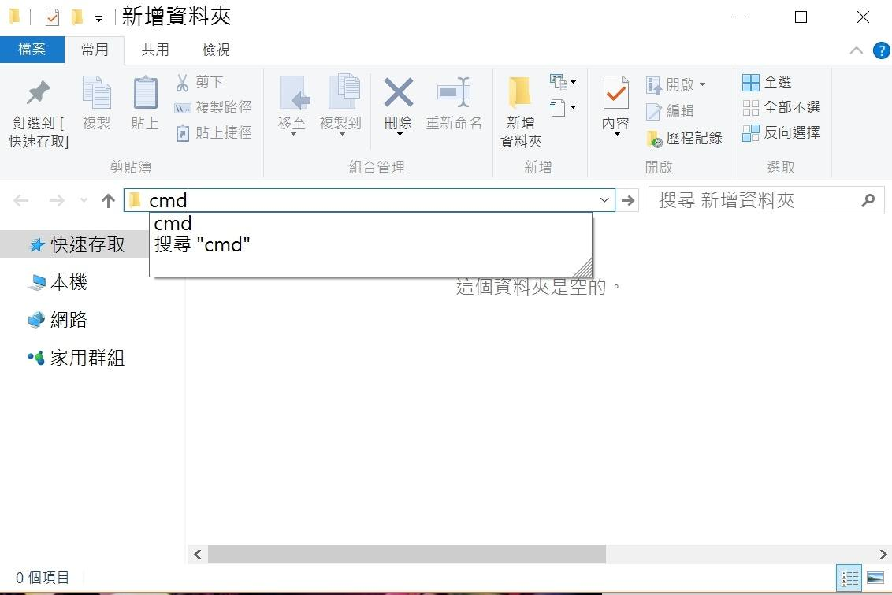
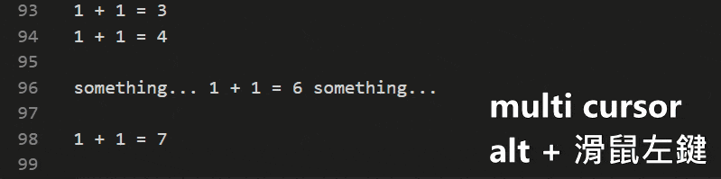
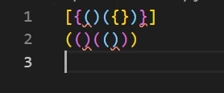

蒐集我常用的各種小工具與常用功能的快捷鍵，或是好像比較不為人知的一些小技巧，歡迎分享與交流。
Chrome瀏覽器
1. 基本的快捷鍵
- 關閉分頁： ctrl + w 或 滑鼠中鍵點分頁
- 切換分頁： ctrl + tab（往右）、ctrl + shift + tab（往左）
- 開新分頁： ctrl + t
- 重新開啟最後關閉的分頁： ctrl + shift + t
- 開無痕視窗： ctrl + shift + n
- 用當前分頁網址再開一個新的分頁：alt + d 然後 alt + enter 或 滑鼠中鍵點重新整理的icon，基本上只要是網址都可以用滑鼠中鍵，上一頁、下一頁的icon以及書籤的資料夾（一次開多個書籤）都可以
2. 書籤整理
有些常用到爆炸的網站像是：Google Map、字典等等的網站，在書籤上可以編輯名稱，不輸入名字，就會只留icon可以省書籤列空間，資料夾名稱也可以放emoji裝飾，下圖是我的Chrome書籤列XD

3. 開發人員工具DevTools(不知道怎麼開的上網查一下XD，我最常開的方法是按F12)
- 開Run command裡面有更多的功能可以用，快捷鍵： ctrl + shift + p
 - 在Run command輸入screenshot會搜尋到四種截圖方式：選取部分畫面、全畫面擷取（包含網頁要往下滑才看的到的內容）、一個DOM節點的畫面擷取、當前顯示的畫面擷取

4. Debug
- 除了常用的在行數上面點一下會出現中斷點，在行數上面按右鍵可以新增conditional breakpoint、logpoint
 - 有些時候用console.table()印資料來顯示比較方便

5. Chrome開發相關我平常追蹤的地方
Google Chrome Developers Youtube Channel
6. 外掛
- Streamkeys： 可以設定快捷鍵去操作瀏覽器正在播放的歌（Youtube、Spotify等等），有分成視窗切換到瀏覽器才有效的快捷鍵或是全局不用切換視窗只要有開著瀏覽器就有效的快捷鍵，我需要不用切換畫面就可以直接控制音樂，這樣做事做到一半要換歌或是暫停都不用滑鼠跟切畫面，我習慣用Spotify桌面板，但是桌面板快捷鍵要切換視窗才可以控制音樂，最後方法是用瀏覽器開一個Spotify的分頁，因為Spotify同一帳號不同設備之間都有連動，所以我用Streamkeys控制瀏覽器Spotify分頁的音樂，也會控制到桌面板的Spotify的音樂
- Marinara: Pomodoro® Assistant： 如果你聽過番茄工作法，可以裝這個外掛來輔助，認真想要有效率要專注做事情或是學習的時候我會使用
Youtube平台
1. 常用快捷鍵
- 全螢幕： f
- 倒帶30秒： j
- 快轉30秒： l
- 暫停： k
- 減速： shift + <
- 加速： shift + >
- 靜音： m
- 字幕： shift + c
- 下一個影片： shift + n (next)
- 上一個影片： shift + p (previous)
2. 自訂影片速度
youtube只提供0.75x跟1x速度，有時候放play-along的歌練習打鼓，但是一開始跟音樂太快的時候可以用這個方法更精細控制速度一點一點的從慢的練習到正常速度： 在瀏覽器DevTools的console裡面輸入
1 | document.querySelector('video').playbackRate // 顯示現在撥放速度 |
Windows作業系統
- ZoomIt：微軟官方出的放大螢幕小工具，簡報演講萬一要demo真的有什麼文件無法放大的時候可以用，也可以在螢幕當白板寫字
- PicPick：主要是截圖軟體，可以有多種截圖的方式，也可以在螢幕當白板寫字
- 在任一資料夾下，在資料夾路徑輸入cmd可以直接開啟一個command line interface，路徑就是剛才資料夾的路徑，不過權限不是管理員

Visual Studio Code外掛
- Zoom放大縮小快捷鍵：ctrl + = （放大）、ctrl + - （縮小）
- Emmet in Visual Studio Code（以前叫Zencoding）：Visual Studio Code已內建，有很多簡便的功能，最基本的像是multi cursor可以按住alt+滑鼠一次多個游標編輯多個地方
 - Live Server：如果要編輯html可以直接有一個Go Live按鈕幫你開一個local server即時顯示
- Bracket Pair Colorizer：幫你把誇號、大誇號同一組用同樣的顏色，不然誇號一連串的話看到眼睛快花了
 - Markdown All in One、Markdown Preview Github、markdownlint：我個人寫markdown有用
Google Search關鍵字
我最常用的是完全符合關鍵字的「"keyword"」和包含網站「site:xxxx.com」以及排除網站「-site:xxxx.com」